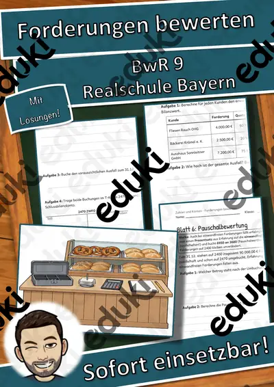

Textverarbeitung festigen: Abschlussaufgabe – Arbeitsheft mit Lösungen (IT 6/7, Realschule Bayern)
Das Heft wiederholt und verbindet das Gelernte zur Textverarbeitung: Die Klassen ZEICHEN, ABSATZ, DOKUMENT und TABELLE mit ihren Attributen werden gelesen, geschrieben und in Punktnotation geändert. Am Ende planen die Lernenden ein Dokument Schritt für Schritt, prüfen es mit einer Checkliste und bewerten es mit einem Raster. Das Heft ist programmneutral und kommt ohne Bildschirmfotos aus.
Für das Fach Informationstechnologie (IT), Jahrgangsstufe 6/7, an der Realschule in Bayern.
Enthalten (13 Seiten): Lehrerinfo mit Einsatzhinweisen · 9 Arbeitsblätter, u. a. Klassen und Attribute wiederholen; Objektkarten lesen; Objektkarten schreiben; Punktnotation; Fehler in einem Text finden; Eine Einladung planen; Checkliste zur Selbstkontrolle · Lernzielkontrolle · Lösungen zu allen Blättern.
Einsatz: Übung und Vertiefung im Unterricht, als Hausaufgabe, zur Wiederholung oder in Vertretungsstunden. Zum Ausdrucken und Kopieren. Alle Namen, Betriebe und Beträge in den Aufgaben sind erfunden.
Texte KI-gestützt und vom Autor geprüft.
Ähnliche Materialien

Textdokumente aufbauen: Zeichen, Absatz, Seite – Arbeitsheft mit Lösungen (IT 6/7, Realschule)

Bilder, Textfelder und Schriftzüge im Dokument – Arbeitsheft mit Lösungen (IT 6/7, Realschule)

Briefe nach Norm: DIN 5008 verständlich – Arbeitsheft mit Lösungen (IT 6/7, Realschule Bayern)

Forderungen bewerten – Arbeitsheft mit Lösungen (BwR 9, Realschule Bayern)

Bildbearbeitung: wichtige Begriffe – Arbeitsheft mit Lösungen (IT 6/7, Realschule Bayern)

Programmierprojekt: ein kleines Spiel – Arbeitsheft mit Lösungen (IT 6/7, Realschule Bayern)

Tabellen im Textdokument gestalten – Arbeitsheft mit Lösungen (IT 6/7, Realschule Bayern)